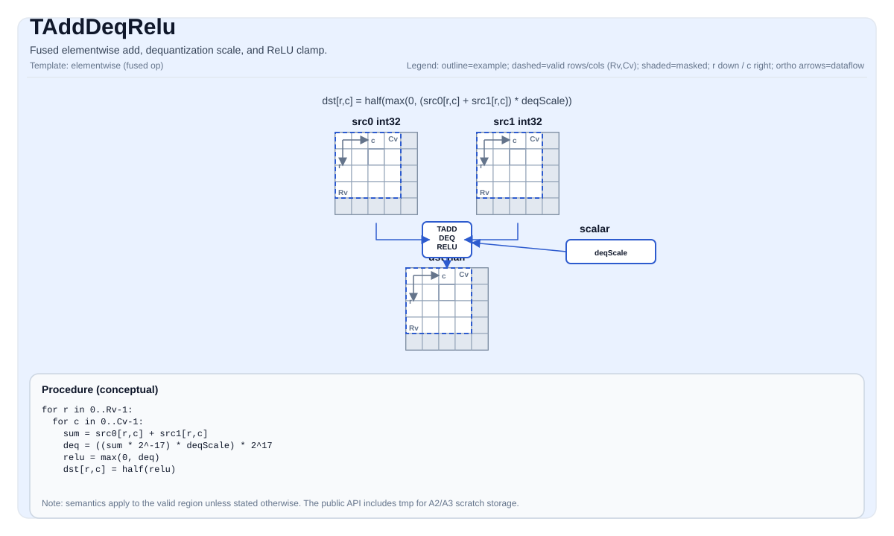

TAddDeqRelu¶
指令示意图¶

简介¶
融合逐元素加法、反量化缩放和 ReLU 限幅。逐元素计算: dst = max(0, (src0 + src1) * deqScale)，并转换为 half。
在 ISA 语义层面, 该操作是单条融合指令 (TADDDEQRELU): 对两个 int32_t 源 Tile 做加法, 应用浮点反量化缩放系数, 将负值限幅为零, 并在一个语义步骤内将结果窄化为 half。后端实现可因架构而异, 但对用户可见语义一致。
数学语义¶
对每个元素 (i, j) 在有效区域内:
\[ \mathrm{dst}_{i,j} = \mathrm{half}\!\left(\max\!\left(0,\;\left(\mathrm{src0}_{i,j} + \mathrm{src1}_{i,j}\right) \cdot \mathrm{deqScale}\right)\right) \]
实现中使用精度补偿缩放序列:
\[ \left(x \cdot 2^{-17}\right) \cdot \mathrm{deqScale} \cdot 2^{17} \]
其中加法结果 x = src0 + src1。该序列在数学上等价于 x * deqScale, 同时避免较大 int32_t 中间值带来的精度损失。最终转换为 half 时采用饱和行为; 舍入遵循就近偶数 (round-to-nearest-even)。
汇编语法¶
PTO-AS 形式: 详见 PTO-AS 规范.
同步形式:
%dst = tadddeqrelu %src0, %src1, %deqScale, %tmp : !pto.tile<...>, !pto.tile<...>, f32, !pto.tile<...>AS Level 1（SSA）¶
%dst = pto.tadddeqrelu %src0, %src1, %deqScale, %tmp : (!pto.tile<...>, !pto.tile<...>, f32, !pto.tile<...>) -> !pto.tile<...>AS Level 2（DPS）¶
pto.tadddeqrelu ins(%src0, %src1, %deqScale, %tmp : !pto.tile_buf<...>, !pto.tile_buf<...>, f32, !pto.tile_buf<...>) outs(%dst : !pto.tile_buf<...>)C++ 内建接口¶
声明于 include/pto/common/pto_instr.hpp:
template <typename TileDataDst, typename TileDataSrc0, typename TileDataSrc1, typename TileDataTmp,
typename... WaitEvents>
PTO_INST RecordEvent TADDDEQRELU(TileDataDst &dst, TileDataSrc0 &src0, TileDataSrc1 &src1, float deqScale,
TileDataTmp &tmp, WaitEvents &... events);约束¶
- 源类型:
src0和src1必须为int32_t。 - 目标类型:
dst必须为half。 - 临时 Tile 类型:
tmp必须为int32_t。 - 布局: 所有 Tile 必须为行优先布局 (
TileData::isRowMajor)。 - 位置: 所有 Tile 必须位于
TileType::Vec。 - 有效区域:
validRow > 0且validCol > 0;src0和src1的有效形状必须与dst的有效形状匹配。 - 临时 Tile 形状:
tmp必须至少覆盖dst的有效区域。 - 缩放系数:
deqScale是标量float, 均匀应用到每个有效元素。 - 实现说明 (A2A3): 先将加法结果写入
int32_t临时 Tile, 再将临时结果转换为float, 依次应用2^-17、deqScale和2^17, 与零做 ReLU, 最后从float转换为half。 - 实现说明 (A5): 中间值保存在 VF 寄存器中, 内部不需要单独的 UB 临时缓冲区。公共内建接口仍接受
tmp, 用于保持与 A2/A3 的接口一致性。
示例¶
自动模式¶
#include <pto/pto-inst.hpp>
using namespace pto;
void example_auto(float deqScale) {
using SrcTileT = Tile<TileType::Vec, int32_t, 16, 16>;
using DstTileT = Tile<TileType::Vec, half, 16, 16>;
using TmpTileT = Tile<TileType::Vec, int32_t, 16, 16>;
SrcTileT src0, src1;
DstTileT dst;
TmpTileT tmp;
TADDDEQRELU(dst, src0, src1, deqScale, tmp);
}手动模式¶
#include <pto/pto-inst.hpp>
using namespace pto;
void example_manual(float deqScale) {
using SrcTileT = Tile<TileType::Vec, int32_t, 16, 16>;
using DstTileT = Tile<TileType::Vec, half, 16, 16>;
using TmpTileT = Tile<TileType::Vec, int32_t, 16, 16>;
SrcTileT src0, src1;
DstTileT dst;
TmpTileT tmp;
TASSIGN(src0, 0x0000);
TASSIGN(src1, 0x0800);
TASSIGN(tmp, 0x1000);
TASSIGN(dst, 0x1800);
TADDDEQRELU(dst, src0, src1, deqScale, tmp);
}汇编示例 (ASM)¶
自动模式¶
# 自动模式: 由编译器/运行时负责资源放置与调度.
%dst = pto.tadddeqrelu %src0, %src1, %deqScale, %tmp : (!pto.tile<...>, !pto.tile<...>, f32, !pto.tile<...>) -> !pto.tile<...>手动模式¶
# 手动模式: 先显式绑定资源, 再发射指令.
# 可选 (当该指令包含 tile 操作数时):
# pto.tassign %arg0, @tile(0x0000)
# pto.tassign %arg1, @tile(0x0800)
# pto.tassign %tmp, @tile(0x1000)
%dst = pto.tadddeqrelu %src0, %src1, %deqScale, %tmp : (!pto.tile<...>, !pto.tile<...>, f32, !pto.tile<...>) -> !pto.tile<...>PTO 汇编形式¶
%dst = tadddeqrelu %src0, %src1, %deqScale, %tmp : !pto.tile<...>, !pto.tile<...>, f32, !pto.tile<...>
# AS Level 2 (DPS)
pto.tadddeqrelu ins(%src0, %src1, %deqScale, %tmp : !pto.tile_buf<...>, !pto.tile_buf<...>, f32, !pto.tile_buf<...>) outs(%dst : !pto.tile_buf<...>)